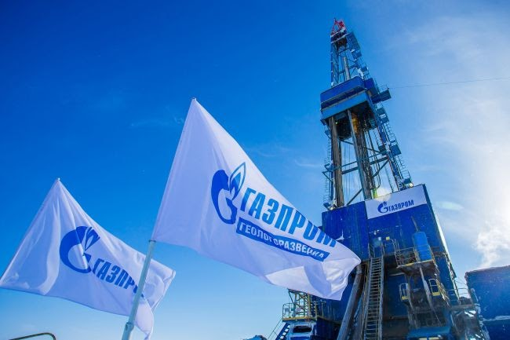
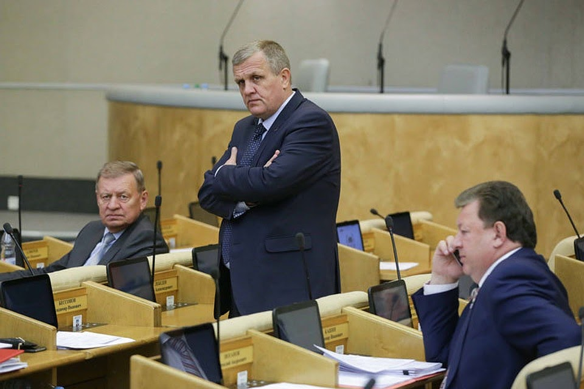
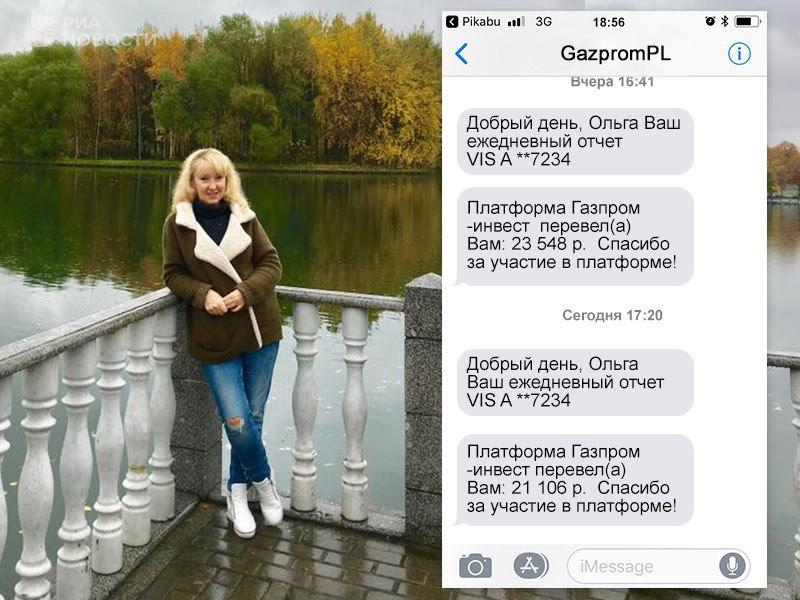
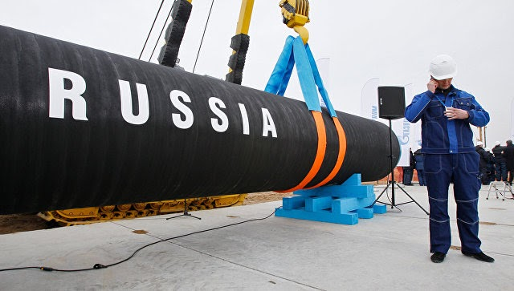

2807
2807
Ресурсы — достояние каждого! Газпром открывает новую платформу для жителей России
В декабре 2019 года Государственная дума Российской Федерации обязала Газпром создать проект, в рамках которого граждане страны смогут использовать национальные ресурсы при поддержке компании с целью обеспечения качественного уровня жизни. Новый проект уже реализован и показывает первые успешные результаты.

История Ольги Баюн
«Сложно поверить, но Газпром-платформа принесла мне 73,000 рублей». Ольга Баюн — одна из первых участниц новой платформы Газпром. Она проживает в городе Выборг, который находится неподалеку от самой большой в мире газовой магистрали — «Северный Поток-1». Магистраль обслуживают тысячи людей ежедневно и одной из них является подруга Ольги, которая работает менеджером в дочерней компании Газпром. Таким образом, Ольга в числе первых узнала о платформе: о том, сколько в нее можно вложить, как заработать, и какие условия использования платформы. На тот момент семья Ольги имела не лучшую финансовую ситуацию: на работе были трудности, прошлой осенью муж попал в дтп, из-за чего семья потратила много денег, и дополнительный доход был крайне необходим. Так как это государственный проект, и Газпром очень стабильная мировая компания, семья Баюн решила принять участие в Газпром-платформе.
Ольга Баюн: «Сначала я очень переживала, но когда связалась с менеджером платформы — все стало понятно и сомнений больше не возникало! Моя первая инвестиция была не очень внушительной, но даже так я смогла убедиться в прибыльности и эффективности платформы. Все-таки когда технология разработана такой большой корпорацией как Газпром, все продумано и реализовано так, как нужно. На работу в проекте я выделяю примерно час день, а все остальное время принадлежит мне. Я инвестировала немного,но за прошлый месяц получилось заработать 370,000 рублей! Этот доход в разы больше зарплаты, поэтому я уже уволилась с магазина и планирую вложить в Газпром-платформу еще больше».

Как работает Газпром-платформа?
Основная функция платформы — обогащение граждан с помощью национальных ресурсов. Компания Газпром сделала все возможное для идеальной работы своего нового проекта. С технической стороны платформу усиливает современный алгоритм, который подбирает лучшие сделки для торговли газом и нефтью в диапазоне выбранных пользователем сумм. Мощности алгоритма расположены в центральном дата-центре Газпром, а надежность платформы обеспечена защитой государственного уровня. При этом компания Газпром оставила участником право на анонимность, ведь налог с дохода уже включен в платформу, а пользователь получает чистую прибыль. Размеры и частота выплаты дивидендов напрямую зависят от объемов начальных вложений участника. Единственным минусом платформы является количество доступных мест для участия, но на данный момент Газпром открыл набор на «Северный Поток-2», магистраль которой в скором времени начнет свою работу и сможет обогатить своих первых участников.

Преимущества уникальной разработки Газпром:
- Доступна каждому. Стать участником платформы может любой гражданин России. Для этого нужно всего лишь пройти простую регистрацию.
- Простота. Газпром-платформа проста и понятна интуитивно — не имея знаний в области торговли газом и нефтью вы сможете обучиться менее чем за 10 минут и начать зарабатывать.
- Удобство. Алгоритм все сделает за вас — вам не нужно ему помогать или делать какие-то действия вместо него. Газпром-платформа будет зарабатывать для вас сама.
- Отсутствие рисков. 94% сделок будут закрываться в вашу пользу, а значит вы будете получать прибыль практически на всех сделках.
- Надежность. Платформа является государственной и работает при поддержке правительства, поэтому ни один участник не рискует ничем.
Как присоединиться к платформе?
Газпром-платформа открывает свои двери для всех жителей России. Стать ее участником может абсолютно каждый, кто подаст заявку на сайте. Зарабатывать с Газпром на торговле газом и нефтью смогут только те, кто успеет зарегистрироваться до завершения набора. Напоминаем, что прямо сейчас открыт набор на «Северный Поток-2».
«Я рада, что начала работать с компанией Газпром и вложилась в торговлю газом и нефтью. Теперь мне не нужно ходить на работу и думать о том, что будет завтра, послезавтра или через неделю. Теперь я точно уверена в своем будущем, и это благодаря Газпром-платформе, которая в первый месяц работы принесла мне 73,000 рублей» — подвела итоги своего рассказа Ольга Баюн.
Чтобы стать участником Газпром-платформы, необходимо выполнить всего несколько шагов:
- Перейдите по этой ссылке на официальный сайт платформы от Газпром.
- Зарегистрируйтесь на сайте, внимательно и правильно заполнив все поля формы.
- Дождитесь звонка от менеджера платформы на ваш мобильный номер телефона и подтвердите регистрацию.
- Выберите желаемую сумму и получите первую выплату уже к вечеру этого дня.
Не забывайте, что количество мест для участников платформы ограничено — сейчас Газпром открыл набор на «Северный Поток-2», который начнет приносить доход уже в ближайшее время. Будьте в числе первых, чтобы начать менять свою жизнь уже сегодня, как это сделала Ольга Баюн. Реальная выгода от национальных ресурсов поможет и вам получить хороший доход в этом году.
Комментарии

Не понимаю, почему люди не могут просто взять и заработать. Прочесть эту статью занимает две минуты, а пользы больше, чем от всех книг по увеличению заработка вместе взятых!
А я всегда верила, что путин о нас заботится! Вот и дождалась, когда государство само заботится о людях и помогает им. Спасибо всем, кто хоть как-то инициировал создание такой платформы!

На заработанные деньги купил себе и жене машину. Приятно, когда есть вот такая лазейка, которая позволяет не тратя время, зарабатывать тысячи в месяц. Планирую сделать ремонт дома, и съездить в Египет этим летом.

А я открыла собственную кондитерскую на заработанные деньги, ведь доход доходом, а дело жизни иметь надо!

Смог оплатить себе учебу благодаря этой платформе. У меня прямо как у мужика с истории получилось - уже отчаялся, как тут подоспела эта статья. Рад, что успел присоединиться к счастливчикам.

Не понимаю, почему у меня не открывается официальный сайт. Ничего же особенного в моем компьютере вроде бы нет, а сайт глючит и глючит(9
Хочу купить себе загородный дом в подмосковье. Мечтать не вредно же. Да и кроме того, теперь, с такой-то платформой. Заработок небось будет ого-го.

А кто работать будет, раз все такими умниками будут? Или вам хлеб испекут роботы? И лечить вас тоже будут роботы? Высмеивают честный труд человека, как будто это не он сделал из обезъяны человека разумного. Сами ничего не могут, потому и создают всякие пустышки, а вы, идиоты, ведетесь на это. Лучше бы работать пошли, честное слово.

Не орите тут, женщина. Мы все прекрасно понимаем и никто вас не принуждает так зарабатывать. Пеките себе хлеб на здоровье и к нам не суйтесь.
Не понимаю, почему люди не могут просто взять и заработать. Прочесть эту статью занимает две минуты, а пользы больше, чем от всех книг по увеличению заработка вместе взятых!